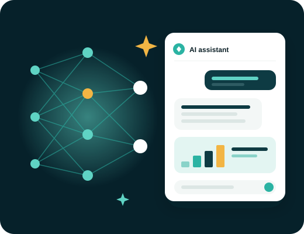
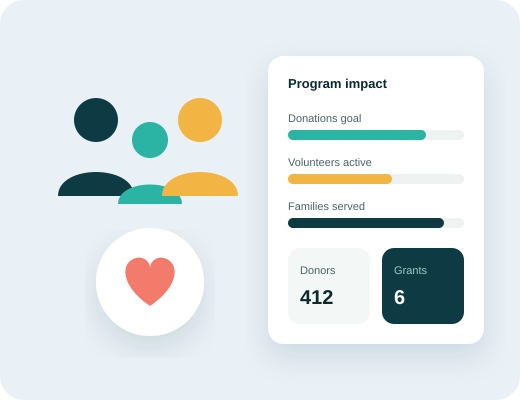
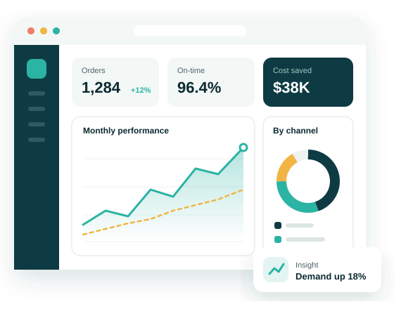
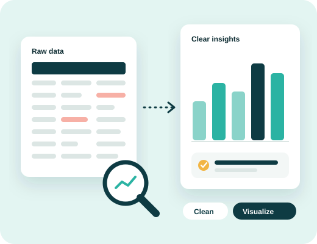
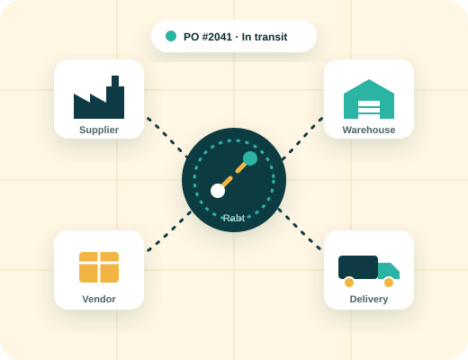

Nonprofits & community organizations
Donor, volunteer and program tracking with impact reporting.
Rabt delivers technology solutions, artificial intelligence and data analysis to for-profit companies and nonprofit organizations, from the first idea to a working system.
Why Rabt
Technology is moving faster than ever, especially artificial intelligence. Most organizations know it could help them work better, but many don’t know where to start or how to make it fit their people.
Rabt closes that gap. We listen first, then design and deliver technology and AI solutions built around the way your team already works, so the tools actually get used.
Solutions
Pick one service or combine them. Every solution is set up for your team and supported after launch.
AI assistants, smart automation and predictive insights that save time and help your team decide faster.
02Ready-to-use online platforms for operations, records and reporting, on a simple monthly plan. No servers to manage.
03We clean and analyze your data, then turn it into live dashboards and clear recommendations.
04Replace manual steps and long email chains with automated approvals, reminders and task tracking.
05Track vendors, purchase orders, inventory and deliveries in one connected system.
06Connect the tools you already use, or build something designed around your exact needs.

Artificial intelligence
AI is not just for tech giants. We help organizations find where AI can make a real difference, then build it into their everyday work with clear goals and the right safeguards.

For nonprofit organizations
Nonprofit teams do a lot with small budgets. We help you organize your work, keep supporters engaged and show your impact to donors and funders.

For for-profit companies
From startups to established companies, we help businesses run on better systems, use their data and put AI to work, so they can serve customers better and compete with confidence.

Data analysis services
Most organizations already have the data they need, spread across spreadsheets, systems and forms. We bring it together, clean it and show you what it means, so you can act with confidence.
A focused project to answer a specific question, delivered as a report and presentation.
We design and build a live dashboard connected to your data, then train your team to use it.
A monthly plan with regular reporting, check-ins and analysis on demand.
Industries
Every sector works differently. We adapt our tools and analysis to the way your field operates.
Donor, volunteer and program tracking with impact reporting.
Sales, inventory and customer insights in one view.
Vendor, order and shipment visibility from start to finish.
Scheduling, supply and operations reporting.
Enrollment, attendance and outcome dashboards.
Project, time and client reporting.
Project costs, procurement and schedule tracking.
Cost, waste and sales analysis to protect thin margins.
What we can do for you
A few of the problems we help organizations like yours solve.
Handle common customer or donor questions instantly and pass complex ones to your team.
Track programs and outcomes so annual and grant reports take hours, not weeks.

Replace email chains with purchase orders, approvals and tracking in a single system.
Our approach
A simple, clear process so you always know what happens next.
We learn your goals, processes and pain points in a free consultation.
We recommend the right solution and agree on scope, timeline and price.
We set up, integrate and train your team so the solution gets used.
We stay with you to improve, report on results and grow with you.
About Rabt
Rabt is a technology solutions company based in Tempe, Arizona. We work with for-profit companies and nonprofit organizations that want to use technology and AI to work smarter and serve people better.
We combine AI, cloud software, data analysis and hands-on support, and we stay involved after launch so every solution keeps delivering results.
To help every organization, whatever its size or budget, use technology and data to serve its people better.
For-profit companies and nonprofit organizations. Whether you are just getting started with technology or want to add AI to the systems you already have, we can help.
Common examples are answering frequent questions with an AI assistant, processing documents and forms automatically, and forecasting demand or risks. We start by finding where AI will save the most time or money for you.
Software as a Service. Instead of buying and installing software, you use it online through a monthly subscription. We handle hosting, updates and security.
Yes. Data analysis is a standalone service. You can start with a one-time project, a dashboard build, or an ongoing monthly plan, with no software subscription required.
Whatever you already have: spreadsheets, exports from your current systems, or survey results. We help you figure out what is useful during the free consultation.
Yes. We only use your data for the work you hire us for, limit who can access it, and can sign a confidentiality agreement before any data is shared.
Yes. Nonprofit organizations receive discounted pricing on our software and data services. Contact us to learn more.
Let’s talk
Tell us about your organization and what you need. We’ll follow up to schedule a free consultation.
Email us directly
rabtsupplychain@gmail.com